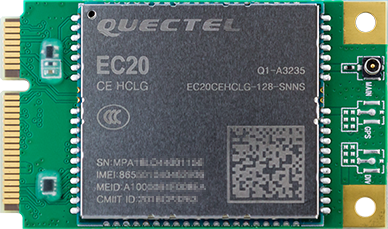
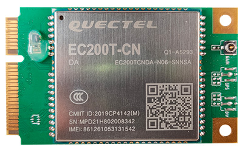
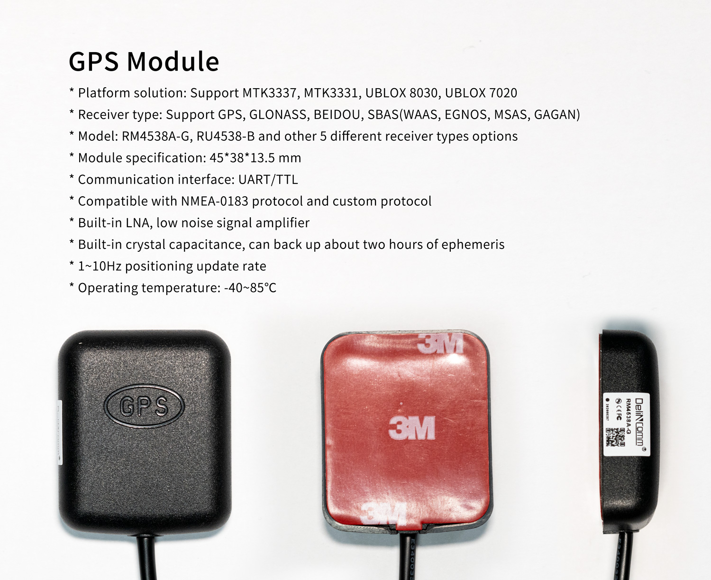
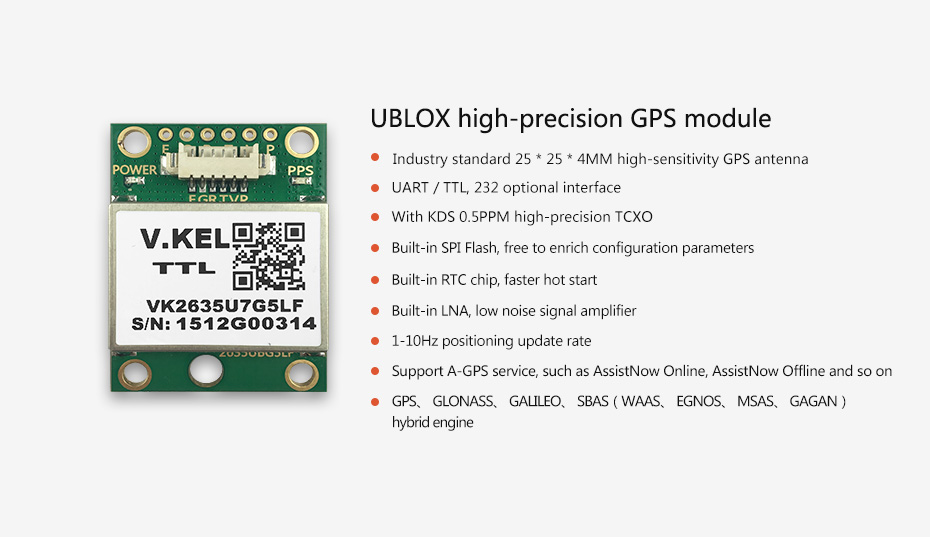

Wireless module¶
EC20 4G Module suite¶
Product parameters¶
Model
EC20-C R2.0 Mini PCIe-C
Supply voltage
3.3V~ 3.6V, Typical values: 3.3V
Working frequency band
TDD-LTE: B38/B39/B40/B41
FDD-LTE: B1/B3/B8
WCDMA: B1/B8
TD-SCDMA: B34/B39
GSM: 900/1800
Data transmission
TDD-LTE： Max 130Mbps (DL) Max 35Mbps (UL)
FDD-LTE： Max 150Mbps (DL) Max 50Mbps (UL)
DC-HSPA+： Max 42Mbps (DL) Max 5.76Mbps (UL)
UMTS： Max 384Kbps (DL) Max 384Kbps (UL)
TD-SCDMA： Max 4.2Mbps (DL) Max 2.2Mbps (UL)
CDMA： Max 3.1Mbps (DL) Max 1.8Mbps (UL)
EDGE： Max 236.8Kbps (DL) Max 236.8Kbps (UL)
GPRS： Max 85.6Kbps (DL) Max 85.6Kbps (UL)
Interface connector
USB: USB 2.0 high-speed interface, 480Mbps
digital voice: 1 digital voice interface (optional)
USIM：1.8V/3V
network indicator: ×2, NET_STATUS 和 NET_MODE
UART：×1 UART
reset: low level
PWRKEY: low level
antenna interface: 3 (main antenna, diversity antenna and GNSS antenna interface)
ADC：×2
Structure size
51.0mm × 30.0mm × 4.9mm
Weight
about 10.5g
Certification
CCC/ NAL*/ TA
GNSS function¶
There are two types of EC20 modules, one is has GNSS and another is no GNSS. EC20 4G modules sold on firefly’s official website do not support GNSS, and the suffix is SNNS. EC20 modules that support GNSS generally have the suffix SGNS.The public firmware supports GNSS function, but it is turned off by default. For the use method, please refer to the chapter EC20 GNSS function.
Real figure¶

EC200T 4G Module suite¶
Product parameters¶
Model
EC200T-CN Mini PCIe-D
Supply voltage
3.4V~ 4.3V, Typical values: 3.8V
Working frequency band
TDD-LTE: B34/B38/B39/B40/B41
FDD-LTE: B1/B3/B5/B8
WCDMA: B1/B5/B8
GSM: 900/1800 MHz
Data transmission
TDD-LTE： Max 120Mbps (DL) Max 3Mbps (UL)
FDD-LTE： Max 150Mbps (DL) Max 50Mbps (UL)
DC-HSDPA： Max 21Mbps (DL)
HSDPA: Max 5.76 Mbps (UL)
WCDMA: Max 384Kbps (DL) Max 384Kbps (UL)
EDGE: Max 236.8Kbps (DL) Max 236.8Kbps (UL)
GPRS： Max 85.6Kbps (DL) Max 85.6Kbps (UL)
Interface connector
USB: USB 2.0 high-speed interface, 480Mbps
digital voice: 1 digital voice interface (optional)
USIM：1.8V/3V
network indicator: ×2, NET_STATUS 和 NET_MODE
UART：×1 UART
W_DISABLE# for Airplane Mode Control
LED_WWAN# for Network Status Indication
PERST# for Module Resetting
RI for Host Wake-up
WAKEUP_IN for Sleeping Control, Low Level Active
WAKEUP_OUT for Sleeping Status Indication
antenna interface: 2 (main antenna, diversity antenna)
Structure size
51.0mm × 30.0mm × 4.9mm
Weight
about 10.2g
Certification
CCC/SRRC/NAL
Real figure¶

Connection¶
Please refer to EC20 4G module suite.
GNSS Module¶
DELINCOMM Series¶
Product Parameter¶

The parameters of each module model of this series will be different, please refer to DelinComm_gps.pdf
Interface Definition¶
VCC (red wire),GND (black wire),TX (white wire),RX(green wire)
Instruction¶
Hardware Connection¶
Connect the VCC, GND, TX and RX of the module to 3.3V, GND, RX and TX of ROC-RK3399-PC Pro UART?(the corresponding node is
/dev/tty*) respectively. Pay attention to avoid burning the module due to wrong connection of VCC, GND, TX and RX.For some definitions and descriptions of UART, you can refer to the wiki tutorial UART.
Software Configuration¶
The baud rate of DELICOMM series serial port is configured as 9600. By default, it has been configured in the public firmware and can be used after enabling GPS. For details, please refer to How to enable GPS and modify serial port configuration.
Note: The GPS function will occupy UART?. If UART? needs to be used for other purposes, the GPS needs to be disabled first.
Reference firmware¶
The new firmware of the public version supports GPS module by default, but it needs to be turned on manually. Or directly download the GPS default startup firmware
DK2635U7F Module¶
Product Parameter¶

Interface Definition¶
VCC (white wire),GND (black wire),TX (blue wire),RX(green wire)
Instruction¶
Hardware Connection¶
Connect the VCC, GND, TX and RX of the module to 3.3V, GND, RX and TX of ROC-RK3399-PC Pro UART?(the corresponding node is
/dev/tty*) respectively. Pay attention to avoid burning the module due to wrong connection of VCC, GND, TX and RX.For some definitions and descriptions of UART, you can refer to the wiki tutorial UART.
Software Configuration¶
The baud rate of UBLOX module serial port is configured as 9600. By default, it has been configured in the public firmware and can be used after enabling GPS. For details, please refer to How to enable GPS and modify serial port configuration.
Note: The GPS function will occupy UART?. If UART? needs to be used for other purposes, the GPS needs to be disabled first.
Reference firmware¶
The new firmware of the public version supports GPS module by default, but it needs to be turned on manually. Or directly download the GPS default startup firmware
EC20 GNSS Function¶
EC20 module supports GPS, GLONASS, GALILEO and BEIDOU, and is compatible with standard NMEA 0183 protocol. It can output NMEA information of 1Hz frequency through USB NMEA interface. The default output serial port is /dev/ttyUSB1 and baud rate is 115200 bit/s.
Antenna Requirements¶
Frequency range:1559MHz~1609MHz
Polarization:RHCP or Linear
VSWR:< 2(Typical)
Active antenna noise figure:< 1.5dB
Active antenna gain:> 0dB
LNA gain embedded in active antenna:< 17dB
Instruction¶
Hardware Connection¶
The EC20 module can be connected according to the chapter of EC20 4G Module suite, and the GPS antenna is connected to the interface with GPS silk screen.
Software Configuration¶
For EC20 module, the serial port node and baud rate configured by GNSS are /dev/ttyUSB1 and 115200 respectively. Before using the module, you need to check whether the value of SERIAL_DEVICE or SERIAL_BAUD_RATE in /system/etc/u-blox.conf matches it. If you confirm the matching, you can use it after enabling GPS. Refer to the enabling method How to enable GPS and modify serial port configuration.
Note: For EC20 module, when using GNSS function, you need to pay attention to whether has other ttyUSB* devices. If there are other ttyUSB, the default ttyUSB device number of EC20 may be changed, resulting in the failure of GNSS function.
How to enable GPS and modify serial port Configuration¶
Glossary:
SERIAL_DEVICE: Serial port nodeSERIAL_BAUD_RATE:Serial baud rate
Temporary modification method¶
Ensure that the firmware is the latest public firmware. The firmware turns off the GPS function by default and needs to be enabled manually. The following is the modification method:
Enable ADB, and how to enable ADB, please refer to wiki tutorial ADB Use
Set system readable and writable
adb shell setprop persist.sys.root_access 3 adb root && adb remount
Modify Parameters
Enabled GPS：Modify the parameter
ro.factory.hasGPSin/system/build.prop(The version above Android7.1 is/vendor/build.prop) on the machine totrueto enable GPS. It will take effect after soft restarting the machine.Modify serial port configuration (serial port node or baud rate)：Modify the
SERIAL_DEVICEorSERIAL_BAUD_RATEin/system/etc/u-blox.confon the machine to the value of the corresponding module configuration. It takes effect after soft restarting the machine.
Code modification method¶
Enabled GPS
Modify the
BOARD_HAS_GPSin the SDK directorydevice/rockchip/rk3399/rk3399_roc_pc_plus.mk(The version above Android7.1 isdevice/rockchip/rk3399/rk3399_roc_pc_plus/rk3399_roc_pc_plus.mk) totrueto enable GPS function. Then, recompile the SDK and upgrad the firmware to take effect.
Modify serial port configuration (serial port node or baud rate)
Modify the
SERIAL_DEVICEorSERIAL_BAUD_RATEin the SDK directorydevice/rockchip/rk3399/gps/u-blox.conf(The version above Android7.1 isdevice/rockchip/rk3399/rk3399_roc_pc_plus/gps/u-blox.conf) to the value of the corresponding module configuration. Then, recompile the SDK and upgrad the firmware to take effect.